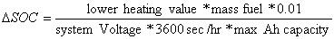

SAE J1711 Test Procedure
Setup, Classification, and Test Procedure Description
The J1711 Test Procedure runs through a maximum of four types of tests, based on the type of hybrid vehicle. The four tests are:
- Partial Charge Test – Hybrid Electric Vehicle (PCT-HEV)
- Full Charge Test - Hybrid Electric Vehicle (FCT-HEV)
- Partial Charge Test – Conventional Vehicle (PCT-CV)
- Full Charge Test - Electric Vehicle (FCT-EV)
The first test, PCT-HEV, is always run. The FCT-HEV test is only run if the vehicle is Off Vehicle Charge (OVC) capable. The PCT-CV test is only run if the vehicle has a “conventional only” mode. The FCT-EV test is only run if the vehicle is both OVC capable, and has a “electric only” mode. The available vehicle options are specified by the user in the J1711 setup screen, as shown below. The air conditioning load is an additional constant load added for only one of the drive cycles (SC03).
For each test, four cycles are run. They are:
- UDDS – Urban Dynamometer Driving Schedule
- HWFET – Highway Fuel Economy Test
- US06 – US06 driving cycle (high speed operation, demanding accelerations)
- SC03 – SC03 driving cycle (additional air condition load, if present, used here)
If the “Iterate to find initial SOC” box was checked, the initial SOC will be adjusted until the ending SOC falls within a tolerance of +-.5%.
Weighting and Results
The J1711 results screen is shown below:
If certain tests were not run, the corresponding buttons will be disabled. The large buttons, when clicked, will display the fuel economy and emissions for the various cycles in the yellow box.
Final
The fuel economy in the “Final” section is the standard weighting of the UDDS and the HWFET final fuel economies. It is computed using the following equation: .
The emissions in the “Final” section are based on either 1) a weighting of the UDDS and US06 final emissions, or 2) a weighting of the UDDS, US06, and SC03 emissions (if the vehicle has air conditioning). More specifically, they are weighted as below:
Final, Cycle level
The fuel economy and emissions for the “Final, Cycle level” section are averages of the Partial Charge Test and Full Charge Test results, given that the FCT results exist.
PCT and FCT
The fuel economy and emissions for the PCT and FCT sections are averages of their respective lower level tests, given that the tests were run.
SOC info. for PCT-HEV gives five values:
- init: Initial SOC at the beginning of the entire drive cycle.
- pause: SOC at the midpoint of the schedule. The PCT-HEV tests run two of the given cycles, one for warmup and the next to measure emissions. The charge sustaining portion of the entire cycle is taken to be the time from the midpoint to the end of the cycles.
- end: Final, or ending, SOC.
- min: Minimum SOC that the “end” SOC can take on, based on “init” for UDDS and “pause” for the rest of the cycles. The min/max SOC’s are calculated based on the following equation: 
- max: Maximum SOC that the “end” SOC can take on, based on “init” for UDDS and “pause” for the rest of the cycles.
If any of the ending SOC’s are red, the test has failed. For the PCT-HEV test results to be valid, the vehicle must be charge sustaining, such that the “end” SOC must fall within the range of the “min” and “max” SOC’s. For the US06 and SC03 cycle, the test may still be valid if the SOC is out of the range, provided that the initial SOC was less that the initial SOC for the UDDS cycle. This exception is indicated by the color pink.
Add’l info. under FCT-EV and FCT-HEV gives three values:
- kWh chg: kWh to recharge the batteries to full charge after going through the given cycle.
- ZEV rng: Range in miles that the vehicle ran as a Zero Emissions Vehicle.
- UF: Utility Factor, a table lookup of the utility of the vehicle (0-.99) as a function of the ZEV range.
Utility Factors (UF)
When vehicle propulsion is no longer possible after driving in EV mode, it is assumed that the driver will switch to either a CV or an HEV mode. Because of this limited utility, FCT-EV, UF results include both FCT-EV data and PCT data. The weighting placed on FCT data will equal the probability that a vehicle (based on national, in-use driving statistics) will be driven in one day a distance that is equal to or less than the total distance traveled during the FCT-EV test. This probability is what is called the Utility Factor because it indicates the limited utility of a particular operating mode. An operating mode with a very long range, for example, will have a very high utility, and, thus, a Utility Factor that approaches 1.0.
Last Revised: 7/21/00:AB